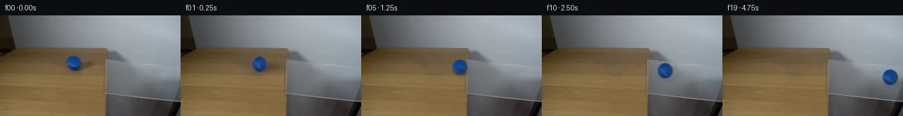

![首帧]()

Round 00
2026-11-04T21:32:01.544274+00:00像素候选变化代码 +156/−0inspection 更新
pixels a2db5e41b39d88ef · code 665d64a154d49cb4
查看本轮 generate.py 真实 diff
--- previous/generate.py
+++ current/generate.py
@@ -0,0 +1,156 @@
+"""Continue the supplied photograph using local image operations and analytic rolling."""
+from pathlib import Path
+import numpy as np
+from PIL import Image, ImageDraw
+from scipy.ndimage import gaussian_filter, map_coordinates
+import cv2
+from artifact_io import save
+
+ROOT = Path(__file__).resolve().parent
+SOURCE = np.asarray(Image.open(ROOT / 'first_frame.png').convert('RGB'), dtype=np.uint8)
+H, W = SOURCE.shape[:2]
+C0 = np.array([104.4, 68.1])
+R0 = 10.5
+Y, X = np.mgrid[:H, :W].astype(float)
+
+def clean_plate():
+ # Repair only the ball and its original cast/contact shadow, using the same image.
+ ball = ((X-104.4)/13.0)**2 + ((Y-68.1)/13.0)**2 < 1
+ shadow = ((X-119.0)/22.0)**2 + ((Y-72.5)/9.0)**2 < 1
+ contact = ((X-106.5)/13.0)**2 + ((Y-79.0)/4.0)**2 < 1
+ mask = ball | shadow | contact
+ local = cv2.inpaint(SOURCE, mask.astype(np.uint8)*255, 4, cv2.INPAINT_TELEA).astype(float)
+ src = SOURCE.astype(float)
+ smooth = gaussian_filter(src, (1.1, 3.5, 0))
+ residual = src-smooth
+ grain = np.zeros_like(src)
+ for y in range(53, 87):
+ left = np.mean(src[y, 81:90], axis=0)
+ right = np.mean(src[y, 143:149], axis=0)
+ mix = np.clip((np.arange(W)-85)/60., 0, 1)
+ row = left[None,:]*(1-mix[:,None])+right[None,:]*mix[:,None]
+ donor = np.clip(np.arange(W)-40, 0, W-1)
+ grain[y] = row + 0.7*residual[y,donor]
+ replacement = .20*local + .80*grain
+ a = gaussian_filter(mask.astype(float), .70)
+ a[mask] = 1
+ plate = src*(1-a[...,None]) + replacement*a[...,None]
+ return np.clip(plate, 0, 255)
+
+PLATE = clean_plate()
+Image.fromarray(np.uint8(np.rint(PLATE))).save(ROOT/'.tmp/clean_plate.png')
+
+# Fit stationary lighting from the blue body in the photograph. Screen y grows downward.
+def features(nx, ny, nz):
+ return np.stack([np.ones_like(nx), nx, ny, nz, nx*nx, ny*ny, nx*ny], axis=-1)
+
+nx=(X-C0[0])/R0
+ny=(Y-C0[1])/R0
+r2=nx*nx+ny*ny
+nz=np.sqrt(np.maximum(0,1-r2))
+fit=(r2<.76) & ~((SOURCE[...,0]>27) & (Y>65))
+F=features(nx,ny,nz)
+coeff=np.linalg.lstsq(F[fit], SOURCE[fit].astype(float), rcond=None)[0]
+
+def light(x,y,z):
+ return np.clip(features(x,y,z) @ coeff, [5,35,78], [50,100,174])
+
+# A closed spherical seam whose front arc follows the visible pale curved line.
+def seam(x,y,z):
+ distance=(y-.20*x-.20*z-.12)/np.sqrt(1.08)
+ strength=np.exp(-.5*(distance/.045)**2)
+ return strength[...,None]*np.array([40.,29.,12.])
+
+# Decompose source texture into fixed lighting and material markings. Front texture
+# rotates on the sphere; the unseen side uses the fitted blue and continued seam.
+texture = SOURCE.astype(float)-light(nx,ny,nz)-seam(nx,ny,nz)
+texture *= np.clip((.97-r2)/.17, 0, 1)[...,None]
+texture = gaussian_filter(texture, (.33,.33,0))
+
+D=np.array([1., .15, .15*.88/.475]); D/=np.linalg.norm(D)
+N=np.array([0., -.88, .475]); N/=np.linalg.norm(N)
+AXIS=np.cross(N,D); AXIS/=np.linalg.norm(AXIS)
+
+def rotation(theta):
+ a=AXIS
+ K=np.array([[0,-a[2],a[1]],[a[2],0,-a[0]],[-a[1],a[0],0]])
+ return np.eye(3)*np.cos(theta)+(1-np.cos(theta))*np.outer(a,a)+np.sin(theta)*K
+
+S=4
+HY,HX=np.mgrid[:H*S,:W*S].astype(float)
+HX=(HX+.5)/S-.5
+HY=(HY+.5)/S-.5
+
+def ball_layer(center, radius, theta):
+ sx=(HX-center[0])/radius
+ sy=(HY-center[1])/radius
+ rr=sx*sx+sy*sy
… diff truncated; 69 more lines …